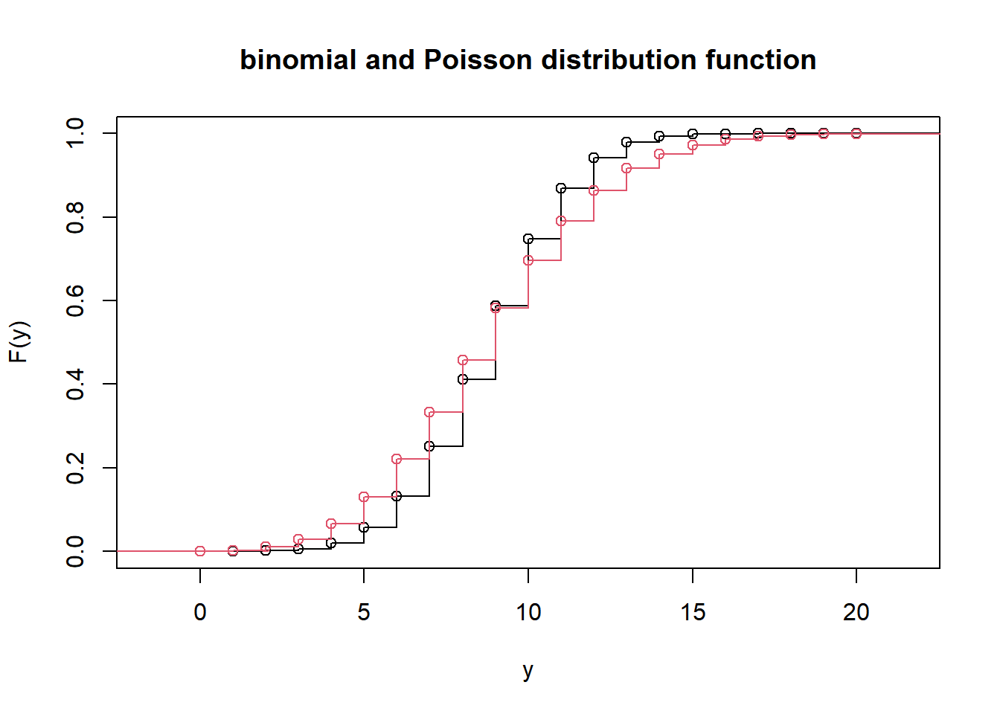

Week 4: Exponential (Dispersion) Families and Introduction to GLM
TODO: swap the last two exercises because result of the last can be used in the second last
ImportantWednesday lecture online this week.
This week, Wednesday lecture is replaced by a video. The material covered are exponential families and exponential dispersion families, and perhaps the proof of the delta method theorem. I recommend to watch at least the video on exponential dispersion families; it will be uploaded to Panopto on Wednesday.
This week marks the transition to the second part of the course: generalized linear models (glm). Linear normal models describe the relation between a normal distributed variable \(Y\) and explanatory variables \(X_1, \dots, X_p\). Here we assume that the mean of \(Y\) is a linear combination of the explanatory variables. Generalized linear models extend this approach to variables \(Y\) with distribution that belongs to the class of so called exponential dispersion families. Also in other aspects, glms are more flexible than the ordinary linear normal model.
Exponential dispersion families include many known distributions, as different as the normal distribution and the Poisson distribution. We will discuss some common properties that are important for the construction of generalized linear models.
, and learn to use a tool that is valuable for deriving results: moment and cumulant generating functions.
Relevant Readings
Exponential families in general: Davison, Section 5.2.1. Definition of generalized linear models: Davison Section 10.3.1.
Important: This course builds upon basic knowledge of general linear normal models, as taught in the introductory course “Mathematical Statistics”. It assumes that you already have used the function lm to analyze those, not only simple linear regression, but also models with categorical covariates (factors). Find a short overview on review-linear-models.pdf, see also Problem 3.4 from last week.
Problem 4.1: Examples of exponential dispersion families (or not)
Consider the family of Gamma distributions with fixed shape parameter \(\alpha\) and with rate parameter \(\lambda\). The density is given as \[
f(y) = \frac{\lambda^\alpha}{\Gamma(\alpha)}y^{\alpha-1} \mathrm{e}^{-\lambda y}.
\] Write this density in exponential dispersion family form, and identify the canonical parameter \(\theta\) as well as the function \(b\). Use these to show that the mean and variance of a Gamma\((\alpha, \lambda)\) distributed variable \(Y\) are \(\mathrm{E}\,Y = \alpha/\lambda\) and \(\mathrm{Var}\,Y = \alpha/\lambda^2\). Then determine the variance function and the canonical link function.
Give at least one example for a well known distribution family that is not an exponential dispersion family.
Tricking MathJax with invisible \(a^2+b^2\)
Problem 4.2: The inverse Gaussian distribution
(See Davison, Exercises 10.3.5. )
The inverse Gaussian distribution IG(\(\mu, \lambda\)) is important in the theory of stochastic processes. It has density \[
f(y;\mu, \lambda) = \sqrt{\frac{\lambda}{2\pi y^3}} \exp\left(-\frac{\lambda(y-\mu)^2}{2\mu^2y}\right),\qquad y>0,\quad\lambda>0, \mu>0.
\]
Show that IG(\(\mu, \lambda\)) is exponential dispersion family. Give the canonical parameter \(\theta\), the dispersion parameter \(\phi\) and the functions \(b(\theta)\) and \(c(y;\phi)\) and show that its variance function is \(V(\mu)=\mu^3\).
Explain the role of the Inverse Gaussian distribution in stochastic processes (Brownian motion) - you can use the Wikipedia page as a (first) source. If you like, illustrate with a simulation.
Tricking MathJax with invisible \(a^2+b^2\)
Problem 4.3: The binomial distribution converges to a Poisson distribution
Davison, Section 2.6 Problem 3:
Show that a binomial random variable \(R\) with size parameter \(m\) and probability \(\pi\) has cumulant-generating function \[K(t)=m\log(1-\pi+\pi\mathrm{e}^t).\]
Find \(\lim K(t)\) as \(m\to\infty\) and \(\pi\to 0\) in such a way that \(m\pi \to \lambda>0\). Show that \[
\mathrm{P}(R=r) \to \frac{\lambda^r}{r!}\mathrm{e}^{-\lambda},
\] and hence establish that \(R\) converges in distribution to a Poisson random variable. This yields the Poisson approximation to the binomial distribution, sometimes called the law of small numbers.
For a numerical check in the R language, try
y <-0:10lambda <-1m <-10p <- lambda/mround(cbind(y = y, binomial =pbinom(y, size = m, prob = p), Poisson =ppois(y, lambda)), digits =3)
with various other values of \(m\) and \(\lambda\).
A little extra: for a visualization of the approximation, you can also make a joint graph of both distribution functions. Try also here to change \(m\) and/or \(\lambda\).
lambda <-10m <-20p <- lambda/mymax <-as.integer(round(2*lambda +1)) # a good range of y-valuesyvalues <-0:ymax# function stepfun needs 1 more value for the y-axis (here F(y)) than for the x-axisbinfoo <-stepfun(yvalues[-(ymax +1)], pbinom(yvalues, size = m, prob = p))poisfoo <-stepfun(yvalues[-(ymax +1)], ppois(yvalues, lambda))plot(binfoo, main ="binomial and Poisson distribution function",xlab ="y", ylab ="F(y)")plot(poisfoo, add =TRUE, col =2)

Tricking MathJax with invisible \(a^2+b^2\)
Problem 4.4: The Weibull distribution for life times
Davison, Section 2.6, Problem 7, minus a typo, plus a bit more explanation, a simulation, and an extra question (c):
A random variable \(Y\) with the Weibull distribution with shape parameter \(\kappa\) and scale parameter \(\lambda\) has distribution function \[
F_Y(y;\kappa,\lambda)= 1-\exp(-(y/\lambda)^\kappa), \quad x>0, \ \ \lambda,\,\kappa > 0.
\] The idea that a system with many similar components will fail when the weakest component fails has led to widespread use of this distribution in industrial reliability. Part a) illustrates this.
Suppose that \(X_1,\dots, X_m\) are independent identically distributed continuous nonnegative random variables such that as \(x\to 0\), the density and distribution functions are asymptotically \(f(x)=a x^{\kappa-1}\) and \(F(x)=a/\kappa \,x^\kappa\), where \(a,\kappa > 0\).
Let \(Y=\min(X_1,\dots, X_m)\) and let \(W=(a/\kappa)^{1/\kappa}m^{1/\kappa}Y\). Show that as \(m\to\infty\), \(W\) has as its limiting distribution the Weibull distribution with shape \(\kappa\) and scale \(\lambda=1\).
Hint, background, demonstration
Hint: a very useful formula in many situations of life is \[
\lim_{n\to\infty} (1+x/n)^n = \mathrm{e}^x.
\]
Background and demonstration In certain application areas, life times of small components are thought to behave like the random variables \(X\) mentioned above. Here is a simulation experiment where \(X\) has distribution given by \(f(x)= a x^{\kappa-1}\) for \(0\leq x \leq (\kappa/a)^{1/\kappa}\). Play with the values \(a\), \(\kappa\) and \(m\).
Explain why a probability plot for the Weibull distribution may be based on plotting the logarithm of the \(r\)th order statistic against \(\log(-\log(1-\frac{r}{n+1}))\), and give the slope and intercept of such a plot.
Use this idea to check graphically whether the data in Table 1.2 follow Weibull distributions.
Hints and remarks
The \(r\)-th order statistic is the \(r\)-th smallest value in a sample \(Y_1, ..., Y_n\). It is denoted as \(Y_{[r]}\).
The plot that Davison suggests is a variant of the qq-plot. In a usual qq-plot,the \(x\)- values of the plotted points are \(F^{-1}(1/(n+1)), F^{-1}(2/(n+1)), \dots, F^{-1}(n/(n+1))\), and the \(y\)- values are \(y_{[1]}, y_{[2]}\dots, y_{[n]}\). If \(F\) is the distribution that generated the sample, the points should lie approximately on an identity line with slope 1 and intercept 0.
A normal qq-plot compares the order statistics against the quantiles of a standard normal distribution. If the data come from a \(N(\mu, \sigma^2)\) distribution with \(\mu \neq 0\) and/or \(\sigma^2\neq 1\), the points would still lie approximately on a straight line, but with intercept \(\mu\) and slope \(\sigma\). Try for example
Table 1.2 can be found in Davison, on p.4. The data are contained as dataframe springs in R package SMPracticals that you installed a while ago :-). The dataset contains a variable cens that indicates if the actual life time has been within the experiment: if cens == 0, the life time was longer and has been censored (by the length of experiment). In all cases where stress was 800 Nm or higher, the true life times have been measured.
You can try out the suggested plot with simulated values from the Weibull distribution:
The family of Weibull distributions with parameters \(\kappa>0\) and \(\lambda>0\) is not (an) exponential family. Why? What, if we restrict to a given \(\kappa>0\)? Is it exponential family then? Is it exponential dispersion family?